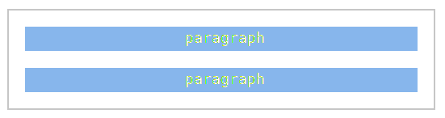
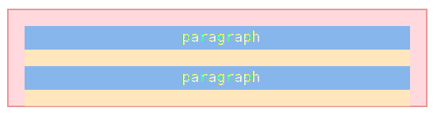
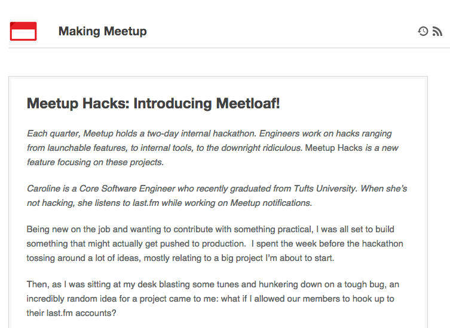
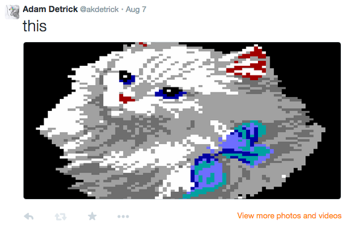

Future Tools
Adam Detrick @akdetrick
*not an actual homerun
UI Design Architect?
Me, on the decision to use Sass @ Meetup
"Sass will make things worse"
"Adding an extra layer of abstraction won't help us"
"Sass encourages bad selectors with nesting"
After 4 years of Sass,
I learned…
- front end package management can work
- variables, functions and mixins facilitate cleaner code
- CSS pre-processors are a sign of maturity in client side development
- we live in the future
Future Tools?
Meetup had a problem

- no central design voice
- you could tell which team built a feature
- inconsistent basic UI components
- lack of design consistency often left the users to do our job
- horribly bloated CSS
- CSS trust death spiral
- we regularly hit the 288kb per-stylesheet IE limit*
*Meetup was already 10 years old in 2012
Design-Driven Development

Tool #1
CSS Foundation
Live style guides are a thing for a reason
github.com/meetup/sassquatch
Meet Sassquatch!

If you've seen one framework, you've seen them all
one-to-many selectors
.specialClass,.foo a,.bar .baz p,.specialList > li a,fieldset .formThing input{ ...styles... }
.specialClass,.foo a,.bar .baz p,.specialList > li a,fieldset .formThing input{ ...styles... }

.wrapNice

Embrace document flow
 Set useful element defaults
reset CSS
Be explicit, not implicit
clever:
.unit .docSection:first-child {
padding-top: $spacing;
border-top: 0;
}
useful:
.docSection--boxHead {
padding-top: $spacing;
border-top: 0;
}
Build small, sharp tools
.promptBox .promptBox-titlebar .promptBox-content .promptBox-actions .promptBox-button--primary .promptBox-button--secondary
"Build from the outside in"

-Dale Sande
SassConf 2013
Static (unautomated) documentation is a lie waiting to happen
Tool #2
Hologram
Keep your documentation fresh
github.com/trulia/hologram
/*doc
---
title: Figureset
name: figureset
category: Layout
---
Figure with description. Similar to OOCSS "media block".
```html_example

This is a fluffy kitten
Maybe not the fluffiest, but he'll do.
```
*//*doc
---
title: Flushing Elements
name: flushModifiers
category: Modifiers
---
Removes all margin and padding on an element for a given direction.
Class | Description
---------------| ----------------------------------------------------
`flush--top` | Sets `margin` and `padding` to `0` for element top
`flush--right` | Sets `margin` and `padding` to `0` for element right
`flush--bottom`| Sets `margin` and `padding` to `0` for element bottom
`flush--left` | Sets `margin` and `padding` to `0` for element left
`flush--all` | Sets `margin` and `padding` to `0` for all sides
*/Tool #3
Rothko
Because cross-platform colors
github.com/meetup/meetup-swatches (prototype)
colors.json + consumers for each platform
SassConf 2013 changed our minds...
because yaml colors!

Choose your own Refactoring Adventure!
Elyse Holladay, Jina Bolton
9am-1pm Friday, Resource Room 2nd Fl
colors.yaml
social:
name: "EXTERNAL"
comment: "third party colors"
colors:
facebook: [59,89,152,1]
twitter: [51,204,255,1]
linkedin: [72,117,180,1]
tumblr: [43,73,100,1]
flickr: [254,8,131,1]
foursquare: [12,186,223,1]
googleplus: [198,61,45,1]
instagram: [78,67,60,1]
reddit: [206,227,248,1]
wepay: *wepayBlueDistributions
Sass, iOS, Android, SVG, ACO, Less, etc.
SVG?

iOS
"social": {
"name": "EXTERNAL",
"comment": "third party colors",
"colors": {
"facebook": [
0.231,
0.349,
0.596,
1
],
"twitter": [
0.2,
0.8,
1.0,
1
],
"linkedin": [
0.282,
0.459,
0.706,
1
],...Android
#ff3b5998
#ff33ccff
#ff4875b4
#ff2b4964
#fffe0883
#ff0cbadf
#ffc63d2d
#ff4e433c
#ffcee3f8
#ff4891dc making.meetup.com
Tool #4
CSS
(cascade)
ul .listThing .specialThing
Specificity: 21
| Inline styles | IDs | Classes | Els & pseudo-els |
|---|---|---|---|
| 0 | 0 | 2 | 1 |
Specificity & the cascade
h2 { color: blue; } /* specificity: 1*/
h2 { color: red; } /* specificty: 1 */
meanwhile, in the rainforest
Martin Fowler, "StranglerApplication"
http://www.martinfowler.com/
2004
meetup.scss
@import "sassquatch.scss"; (the vine)
@import "crustybase.scss"; (the tree)
<jsp:param name="isModernLayout" value="${true}" />
meetup-modern.scss
@import "sassquatch.scss";
Now, with 240kb less CSS!
I should mention Bower.
bower.io
@akdetrick
Thank you, SassConf!
github.com/akdetrick/sassconf
github.com/meetup/sassquatch
github.com/meetup/meetup-swatches
github.com/trulia/hologram
bower.io
making.meetup.com